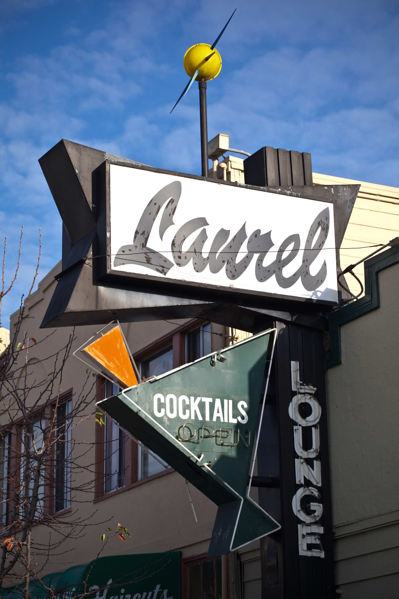
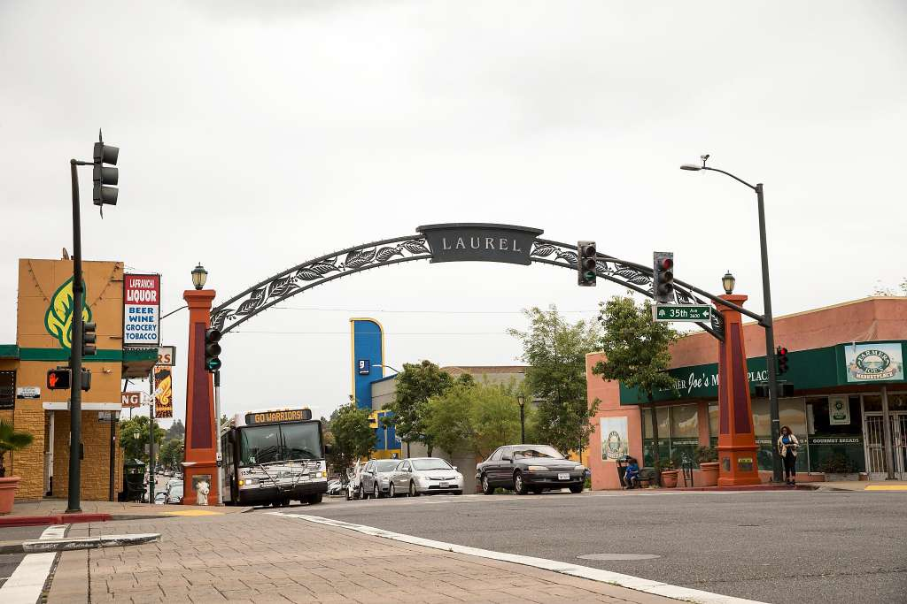
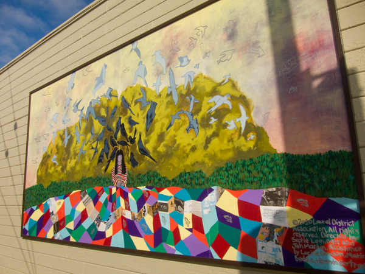
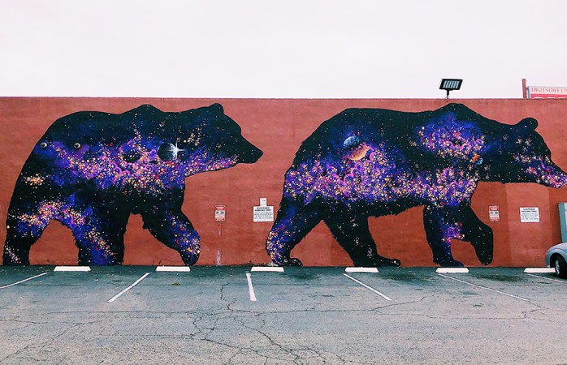
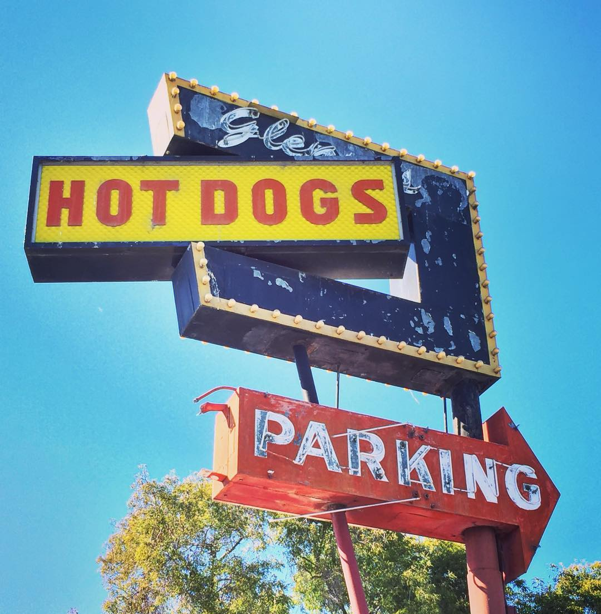
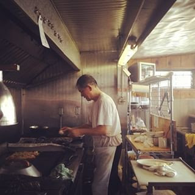
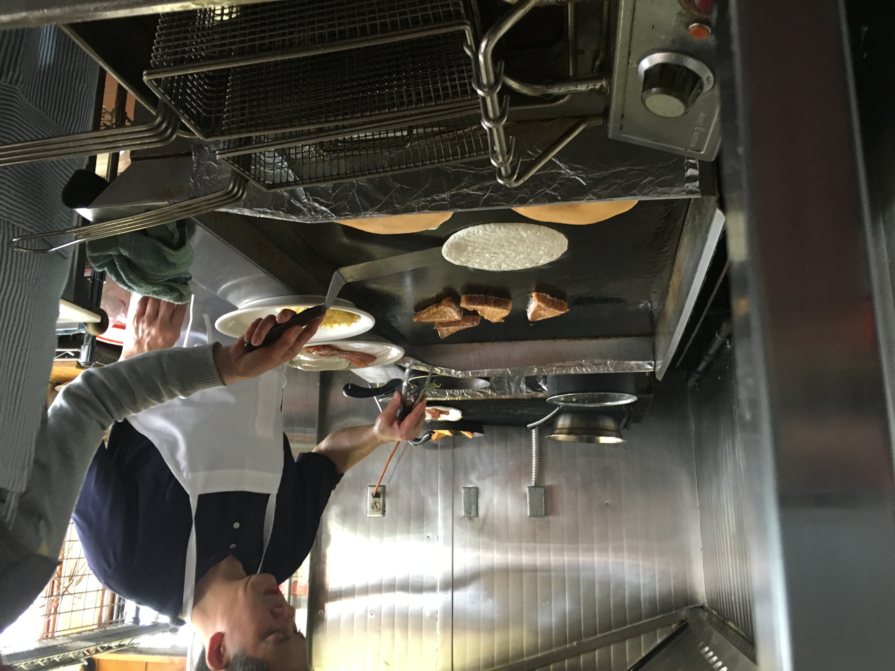

Welcome to Oakland
The Laurel District is a neighborhood located in the southeast area of Oakland, California, between the I-580 freeway (MacArthur Freeway) and the Oakland foothills. Prior to the construction of I-580 in the early 1960s, MacArthur Boulevard was U.S. Highway 50. Many of the Laurel District’s distinctive neon signs date from this time period, when MacArthur was Oakland’s major thoroughfare. From the 1920s until the 1960s, the Laurel was home to two movie theaters: the Laurel Theater (opened in 1939 and now a church) and the Hopkins Cinema (now a Goodwill Store and an AutoZone). The Laurel District expanded during WWII. During the 1940s, Glenn's Hotdogs was first known as Petersen's Hotdogs. Glenn and June operated it soon after and put up the retro sign that we all know today in 1954.
      